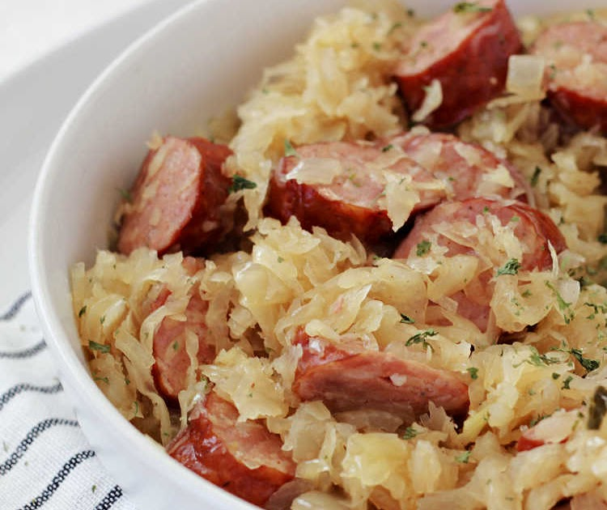

Sausage and Sauerkraut

Description
This recipe is a a simple Sausage and Sauerkraut dish. It's both succulent and splendid!
Ingredients
- 2 pounds sauerkraut
- 1 tablespoon caraway seeds
- ¼ cup brown sugar
- 1 apple
- cooking spray
- ½ pound bacon
- 1 large onion
- 1 ½ pounds kielbasa sausage
Steps
- Place sauerkraut, caraway seeds, brown sugar, and apple into a large saucepan over medium-low heat, and bring to a simmer. Reduce heat to low, and cook for 2 hours, stirring occasionally.
- Preheat the oven to 325 degrees F (165 degrees C). Grease a 9x13-inch baking dish.
- Place bacon and onion into a skillet over medium heat, and cook until bacon is almost crisp and onion is beginning to brown, about 10 minutes. Stir the bacon mixture into the sauerkraut.
- Brown kielbasa sausage in remaining bacon grease in the same skillet until sausage begins to brown, 10 to 15 minutes; stir into the sauerkraut mixture.
- Spoon the sauerkraut and sausage mixture into the prepared baking dish.
- Bake in the preheated oven until bubbling, about 1 hour.